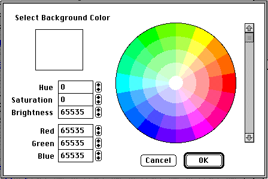

Distributed By: Virtual Labs
Set Background Color
The Set Background Color Dialog Box is accessed from the Edit Menu from
the Set Background Color Menu item. It uses the exact same color wheel as
has been previously described for both the table and plotting objects. When
using monochrome mode, the background should be set to offer the maximum
contrast between background and crystal.

Author: J.ames T.
Stanley
 Desktop
Manual:Dialog Boxes
Desktop
Manual:Dialog Boxes
Distributed By: Virtual Labs
Last Updated:1/12/96 Sat, Apr 27, 1996